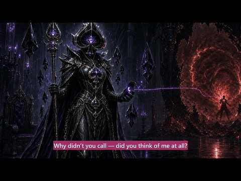
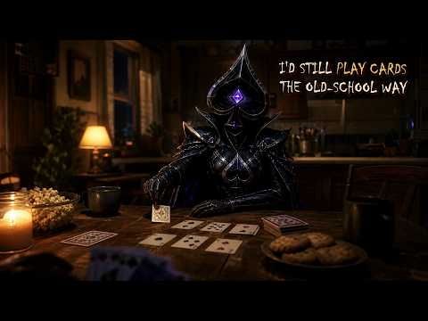
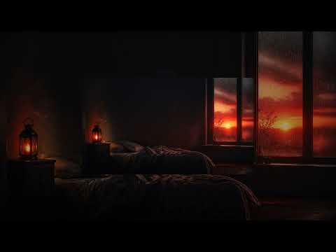

YouTube player · Press play when you’re ready. Open on YouTube ↗
Watch
Why Didn’t You Call?
From The Ones We Carry, by GhostHeart.
Album 07 / 09 · GhostHeart
They were here. They were loved. They still matter.

Read · The album story
THE ONES WE CARRY is for the people we have lost to suicide—and those left behind carrying the love, questions, anger, guilt, and memories.
They were more than the way they died. They were laughter, dreams, flaws, kindness, private battles, ordinary moments, and entire lives. These songs remember the people behind the loss and the love that does not disappear when someone is gone.
This album does not romanticize suicide or pretend grief has simple answers. It gives a voice to everything left in the silence—the signs we wish we had noticed, the words we wish we had said, and the painful work of continuing to live while carrying someone who can no longer walk beside us.
We carry their names.
We carry their stories.
We carry their light.
They were here. They were loved. They still matter.
If you are struggling, please tell someone today. In the United States, call or text 988 for free, confidential crisis support. If you are elsewhere, contact your local crisis service or emergency number.
Listen · The songs
4 songs to spend some time with.



Watch · Stay with the story
YouTube player · Press play when you’re ready. Open on YouTube ↗
Watch
From The Ones We Carry, by GhostHeart.
YouTube player · Press play when you’re ready. Open on YouTube ↗
Watch
From The Ones We Carry, by GhostHeart.
YouTube player · Press play when you’re ready. Open on YouTube ↗
Watch
From The Ones We Carry, by GhostHeart.